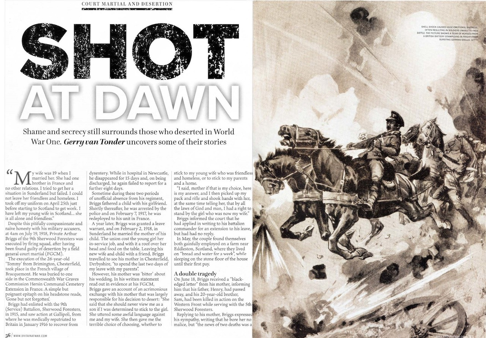

World Wars
Magazine articles
Canada’s First Stand: Battle of Vimy Ridge
Britain at War July 2021

“Two minutes; one minute; thirty seconds; men gasped—perhaps a brief prayer. A mighty roar shook Douai Tunnel and all that trench world, and the stupendous, stunning barrage of 9 April crashed down before the Highland line. In a flicker of time the dawn was raving. A frantic shower of coloured lights sprayed up through the fog from the German line.”
Kim Beattie, chronicler of the 15th Battalion, 48th Highlanders (Toronto), 1st Canadian Division, dramatically portrays the seminal moment in this British dominion’s history which, in the words of author John Pierce, “came to symbolize Canada’s coming of age as a nation”. The battle was the first occasion when the four divisions of the Canadian Expeditionary Force (CEF)—titled the Canadian Corps—fought together, and made a symbol of Canadian national achievement and sacrifice.
At the outbreak of the war, Canada was still 17 years away from being granted legislative independence by Britain, promulgated by the Statute of Westminster 1931. Therefore when Britain declared war, Canada found herself at war, even though ‘she had not been consulted; she had herself made no declaration of war’. But there was never any doubt that Canada would give her all, as reassuringly expressed by Governor General Field-Marshal H.R.H. the Duke of Connaught, the Secretary of State for the Colonies, “that if unhappily war should ensue, the Canadian people will be united in a common resolve to put forth every effort and to make every sacrifice necessary to ensure the integrity and maintain the honour of our Empire.”
However, the dominion faced a Herculean task as an ‘unmilitary nation’ with extremely limited resources and facilities to commit a fully trained and equipped expeditionary force for active service overseas. As of April 1914, the total authorized establishment of the permanent force was 3,110 all ranks. Supplementary to this there existed a ‘Non-Permanent Active Militia’ which, by 1913 stood at around 55,000.
In the Spring of 1917, the German Army High Command accepted the inevitability of a major French and British offensive, and to shorten the line, took the tactical decision to fall back from the Arras–Roye Soissons bulge onto the Siegfried Stellung—the Hindenburg Line. The total destruction of the zone they were vacating would be integral to the withdrawal. Early in March 1917, Lt Gen Sir Julian Byng, commander of the four-division Canadian Corps planned for a four-phase attack, each represented by a coloured line on the map. At an average distance of 750 yards from the Canadians’ front trenches, the Black Line, together with the enemy forward defences, would be the first objective. The Red Line ran north along the Zwischen Stellung from the divisional boundary with the 51st (Highland) Division to a point just south of Petit Vimy. From here, it swung northwest along the right flank of Hill 145 and Vimy Ridge, to the 24th (British) Division boundary.
This represented the final objective of the 3rd and 4th divisions attacking on Byng’s left flank. Onhis right, however, the 1st and 2nd divisions would still face two more objectives: the Blue and Brown lines. The first required capturing the village of Thélus, Hill 135, and the Bois de Bonval and Count’s woods, thereby securing a commanding position overlooking the village of Vimy. The second objective covered the German Second Line, running through Farbus Wood, the Bois de la Ville and part of the Bois de Bonval.
By midnight, Easter Sunday, April 8, 1917, along the whole Canadian Corps sector, thousands of troops of the four divisions, weighed down with combat equipment, moved forward to take up their respective jump-off positions in the forward trenches. Sleep had been impossible in the all-consuming pre-battle tension.
Zero hour and the Allied guns commenced a carefully stage-managed rolling barrage in front of the poised Canadians. Hundreds of Canadian Vickers and Lewis machine guns swept a zone 400 yards ahead, as the corps troops went over the top on the heels of the artillery barrage. They surged ahead against a thin rain with intermittent snowfall, focussing on the first objective, the Black Line the Germans called Zwölfer Weg.
Only threequarters of an hour after zero, the 1st and 2nd divisions had achieved the Black Line objective. The 3rd Division encountered only light resistance but the 4th Division faced the greatest difficulties—it would take them several hours to take their first objective. By 11 April, running for a length of 7,000 yards, and with a depth of 4,000 yards, the whole of the main part of Vimy Ridge was now securely held by the Canadian Corps. In the two days of fighting, the Canadians has suffered 2,967 killed and 4,740 wounded. At the end of war, the 1st and 2nd (Canadian) divisions formed part of the Allied occupation of force of Germany. The Canadian Corps was demobbed in 1919.
Shot at Dawn: Deserters in WWI
Britain at War August 2021

Desertion and punishment statistics emanating from World War One records also reflect inherent and divergent interpretations of military laws and codes. The Army Act of 1881, when flogging was abolished, the 1912 edition of the King’s Regulations and the 1914 Manual of Military Law formed the basis of British military law. However, it could never be envisaged that hitherto unknown prolonged static warfare of industrial proportions lay in the near future, which would leave military codes largely wanting.
Presiding courts martial officers were often subjective in their understanding of what constituted desertion, and in the chambers of Westminster, the morality of shooting your own soldiers for desertion and cowardice polarised the political spectrum.
In April 1930, while hotly debating the issue of the death sentence as a punishment for desertion in the House of Commons, Secretary of State for War and Labour politician, Thomas Shaw, contended that the line between what constitutes cowardice and desertion was, at best, tenuous. Hansard, the official record of parliamentary proceedings, shows Shaw arguing that the two offences were “manifestations in different form of the same failure of nerve power or will power”, adding “if you allow the death penalty for desertion to remain you allow a penalty to remain which was responsible for no less than 92 per cent of the executions in the last War”.
The Army Council, however, countered the proposed abolishment of the death sentence—of which, ironically, Shaw was a member—by insisting ‘. . . dreadful and horrible as it is, it is a sanction which is essential to the discipline of the British Army’. Pro-capital punishment members of the House, however, believed there was a plausible ‘essential’ difference between the two crimes. Desertion took place “not in the heat, turmoil, and horror of the moment of battle, but probably somewhere behind the lines where the man at the moment of desertion is under peace conditions and safety, and he deserts to avoid the danger which he knows lies before him if he carries out the dangerous duty which he has been ordered to do”.
The inference, shared by the Secretary of State for War, but for different reasons, was that the overwhelming majority of desertion convictions were in fact cases of mental distress, commonly referred to as ‘cowardice’.
Hansard records Shaw as saying, “There is no romance in mud, vermin, and shell and shot, where men are destroyed without a possible chance of seeing the enemy they are fighting. There is no romance in that; it is simply brutality, dirt, disease and death. Where a man is engaged regularly in the Army you may be right in shooting him for cowardice, but you have not the same right in the case of civilian volunteers. You have no right to take a man from the factory or the farm and put him into khaki and a tin hat, and then shoot him if he shows cowardice”.
First coined during the conflict by British psychologist Charles Myers, the term ‘shell shock’ was used to describe what would become known as post-traumatic stress disorder, PTSD. However, it would take decades of medical advances to fully understand the psychological and physiological trauma experienced by so many soldiers during the war—the so-called invisible wounds.
Victims would present symptoms such as uncontrollable anxiety, facial tics, loss of sight, stomach cramps, hallucinations, and the inability to eat, sleep, walk or talk. Treatment varied considerably, depending on a medical practitioner’s diagnosis. In many cases, soldiers with shell shock were belittled as they were not ‘man’ enough to deal with the war. The imperative was to return the soldier to the frontline as quickly as possible. Others understood the cause to be as a result of a physical nerve injury, brought on by a soldier enduring prolonged heavy enemy bombardment.
Using full field court martial documentation for Private Arthur Briggs of the 9th Sherwood Foresters, I follow his trial, circumstances and execution by firing squad in France in July 1918. The descendants of Arthur Briggs—and those of all the other 305 men who suffered the same horrific end of life—had to wait 88 years for the powers that be to recognise that these executions were wrong.
Janet Booth, granddaughter of Private Harry Farr, who was shot for cowardice in 1916, campaigned and lobbied tirelessly from 1992 until 2006, when Farr’s family eventually took the British Ministry of Defence to Court. They won their case, and under Section 359, ‘Pardons for servicemen executed for disciplinary offences: recognition as victims of First World War’, of the newly promulgated Armed Forces Act 2006, every one of these soldiers shot during the First World War was granted a pardon. The Act does, however, make it clear that the pardon only applies to the actual execution, and ‘. . . does not lift the convictions or sentences of the servicemen affected’.
Only a few years earlier, on July 24, 1998, the Minister for the Armed Forces, Dr John Reid, told the Commons, “There are deeply held feelings about the executions. Eighty years after those terrible events, we have tried to deal with a sensitive issue as fairly as possible for all those involved. In remembrance of those who died in the war, the poppy fields of Flanders became a symbol for the shattered innocence and the shattered lives of a lost generation. May those who were executed, with the many, many others who were victims of war, finally rest in peace.”